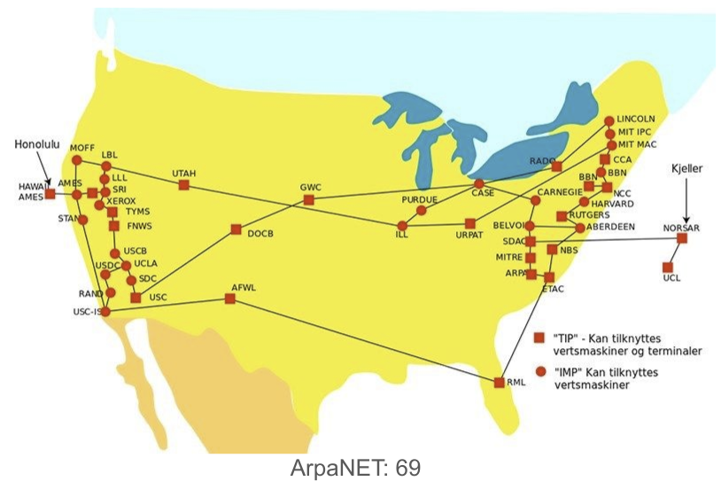
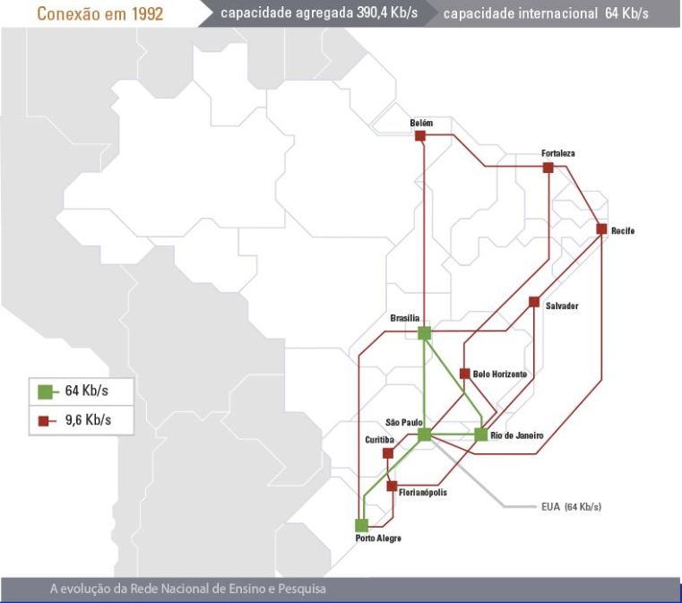
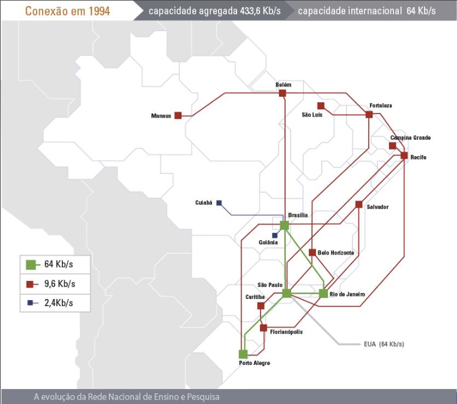
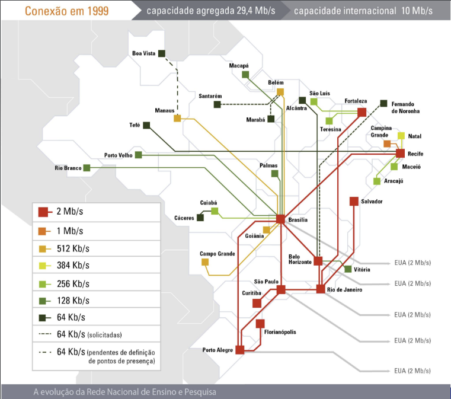
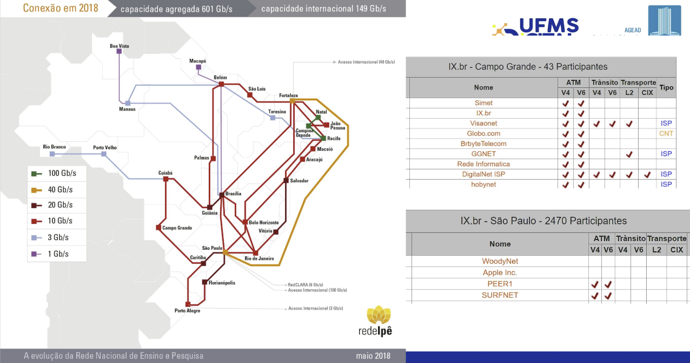
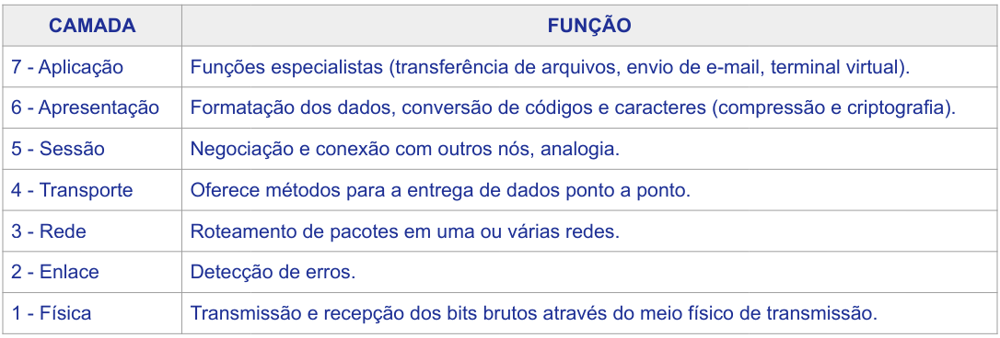
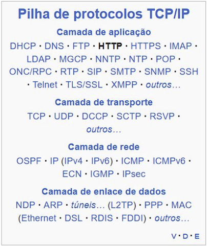
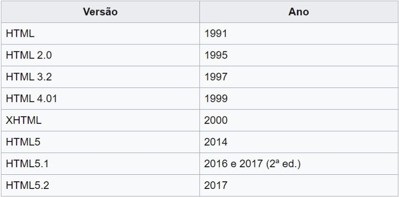

Disciplinas
-
FUNDAMENTOS DE WEB-T01-2024-1. Concluído
Materiais
Vídeo 1 - [UFMS Digital] Fundamentos de Web - Módulo 1. sendProf° ministrante: Luciano Édipo Pereira da Silva.
Conteúdo
Introdução a WEB.
- Unidade 1 - Redes e protocolos de comunicação
- Unidade 2 - O que é a WWW? – o conceito de Hipertexto
- Unidade 3 - Linguagens de Marcação - XML, HTML – Estrutura vs Aparência
Introdução a WEB.
- TelnetSSH
- Internet Telephony (VoIP)
- File Transfer Protocol (FTP)
- World Wide Web (WWW)
Arpanet:
conexão em 1992:
conexão em 1994:
conexão em 1999:
conexão em 2018:
Redes e protocolos de comunicação.
OSI  PROTOCOLOS O que é a WWW?.
- Hipertexto (hipermídia)
- HTTP
- Navegadores
- URI (URL)
Linguagens de Marcação.
- SGML - 60
- HTML - final 80
- XML - 96
(?xml version="1.0" encoding="ISO-8859-1"?>
(receita nome="pão" tempo_de_preparo="5 minutos" tempo_de_cozimento="1 hora">
(titulo>Pão simples(/titulo>
(ingredientes>
(ingrediente quantidade="3" unidade="xícaras">Farinha de Trigo(/ingrediente>
(ingrediente quantidade="7" unidade="gramas">Fermento(/ingrediente>
(ingrediente quantidade="1" unidade="xícaras" estado="morna">Água(/ingrediente>
(ingrediente quantidade="1" unidade="colheres de chá">Sal(/ingrediente>
(/ingredientes>
(instrucoes>
(passo>Misture todos os ingredientes, e dissolva bem.(/passo>
(passo>Cubra com um pano e deixe por uma hora em um local morno.(/passo>
(passo>Misture novamente, coloque numa bandeja e asse num forno.(/passo>
(/instrucoes>
(/receita>
HTML:
(!DOCTYPE html>
(html lang="pt-BR">
(head>
(title>img align(/title>
(/head>
(body>
(p> Este é um exemplo.
(img src="image.png" alt="Image" align="middle" />
Mais texto aqui
(img src="image.png" alt="Image" width="100" />
(/p>
(/body>
(/html>
Linguagens de Marcação - XML, HTML – Estrutura vs Aparência.
Bibliografia.
- FLATSCHART, Fábio. HTML 5-Embarque Imediato. Rio de Janeiro: Brasport, 2011.
- MARINHO, Antônio Lopes; CRUZ, J. L. Desenvolvimento de aplicações para internet. São Paulo: Pearson Education do Brasil, 2017.
- MILETTO, Evandro Manara; DE CASTRO BERTAGNOLLI, Silvia. Desenvolvimento de Software II: Introdução ao Desenvolvimento Web com HTML, CSS, JavaScript e PHP. Porto Alegre: Bookman Editora, 2014.
- REDE NACIONAL DE PESQUISA. Nossa história. Disponível em: